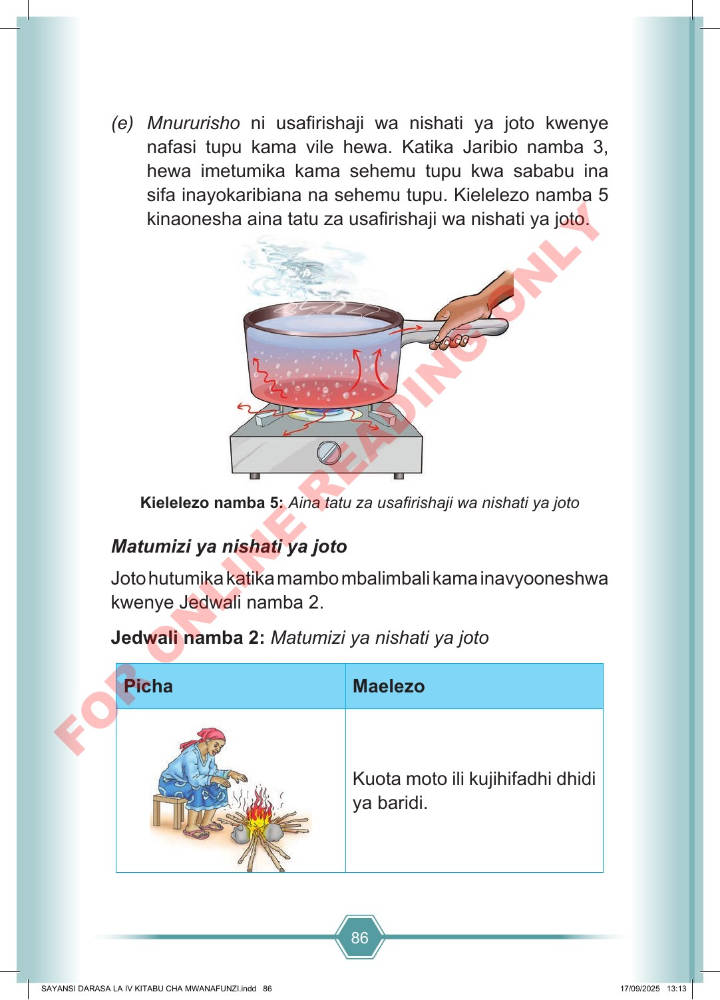

86 (e) Mnururisho ni usafirishaji wa nishati ya joto kwenye nafasi tupu kama vile hewa. Katika Jaribio namba 3, hewa imetumika kama sehemu tupu kwa sababu ina sifa inayokaribiana na sehemu tupu. Kielelezo namba 5 kinaonesha aina tatu za usafirishaji wa nishati ya joto. Kielelezo namba 5: Aina tatu za usafirishaji wa nishati ya joto Matumizi ya nishati ya joto Joto hutumika katika mambo mbalimbali kama inavyooneshwa kwenye Jedwali namba 2. Jedwali namba 2: Matumizi ya nishati ya joto Picha Maelezo Kuota moto ili kujihifadhi dhidi ya baridi. SAYANSI DARASA LA IV KITABU CHA MWANAFUNZI.indd 86 SAYANSI DARASA LA IV KITABU CHA MWANAFUNZI.indd 86 17/09/2025 13:13 17/09/2025 13:13 F O R O N L I N E R E A D I N G O N L Y